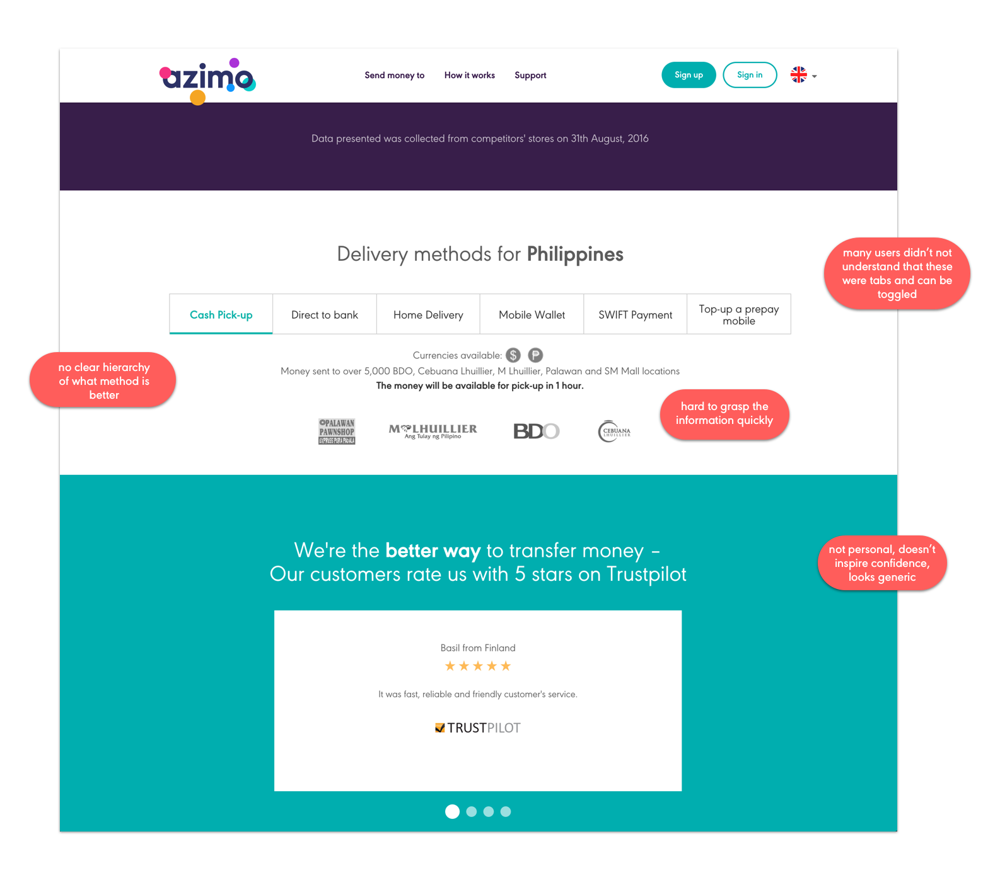

I am currently interning at Azimo, a money transfer app based out of London. This page is in progress.
My first project was to redesign the iPad app for Azimo. Azimo is a company that focuses on mobile first, with its two designer focusing on the redesign of the Android and iOS and also working on the website on the side. However, the iPad app, although available, is merely the iPhone app but bigger. There is a lot of white space and padding on the side of the screens to compensate for the empty space on a bigger screen as there have not been anything designed specifically for the iPad for awhile (if at all). However, the space also allows, as I have been learning, the chance to display information in different ways as well more room to be creative!
I have actually never designed something specifically for the iPad as well. It's a different set of challenge from designing for phone as you have much more space for fill, but you still have to remember the touch screen and keyboard constraints that doesn't usually come with websites. In addition, since Azimo is an international company, I always have to remember to leave room for languages like Russian in which three words in English might be a sentence length long.
As of end of October, the screens I have been working on for the recent sprint has been launched in the app store! Azimo has completely rebranded their app and I was tasked with one of the four tabs on the main screen - the Invite Friend page. The screen, despite it's simplicity, is an crucial way for the company to gain more users and thus more customers. The initial design (the one on the left) was the old design that did not work with their new branding anymore. The final design that I worked on is the on the right in which you can now see on the app store, live!
Azimo has this rewards program in which the more people you invite, the more money you will get - but the problem was how to represent this in a way that will convey the message to users quickly and effectively? Through iteration and feedback sessions, I used iconography, copy, and layout that was simple enough for users to understand at a glance and letting the action items (the buttons) be obvious.
On my downtime I also worked with the Branding/Visual Design team on redesigning the website country landing pages. The parts I was specifically tasked with were the delivery methods and testimonials. This is the old design and some things the team wanted to change.

Delivery: The main problem for the top section of the page is the fact many users did not know they were tabs/buttons they could toggle through. In addition, because they just looked like flat buttons, there were no hierarchy and the information was hard to grasp at a glance
The iMessage flow is the last project I am working on before leaving ☹. This is a relatively new feature of iMessage where you can access apps when texting and have it seemlessly integrated with your conversation. There was not many examples of how this is done just because it is so new. There were less than a handful of apps that I could reference but through research from reading Apple's technical documentation of the features, countless WWDC'16 blog posts and commentary, this is what I came up with. The first iteration is live. I will write more as things progress.